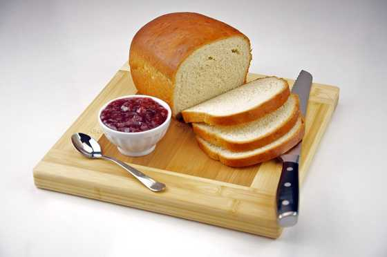
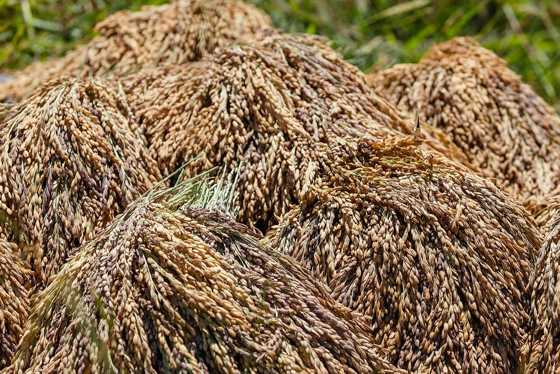
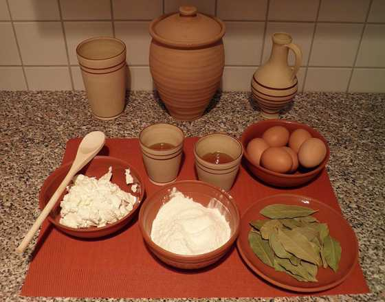
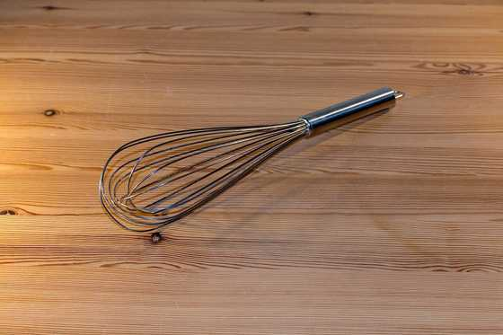
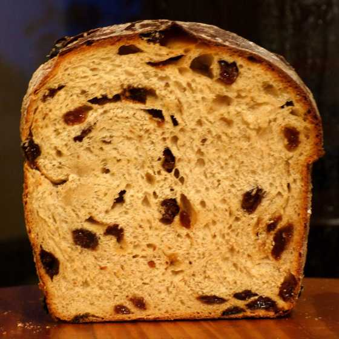
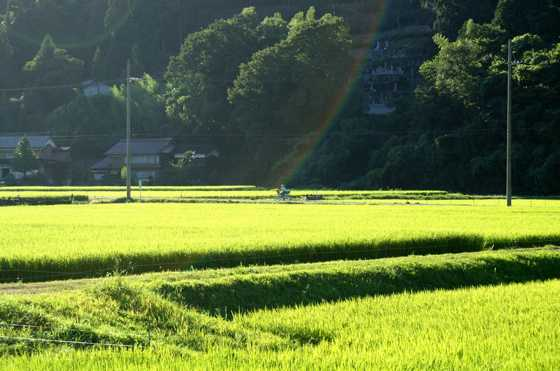

奈良県生駒市東生駒
お米パン
米粉スイーツ あいも
お米の粉のやさしさを、パンとおやつに。

ABOUT
お店のこと
「あいも」は、奈良県生駒市東生駒にあるお米のパンと米粉スイーツのお店です。Instagramのプロフィールでは、1階がグルテンフリーの米粉パンとマフィンのお店、2階が雑貨とアートのカフェとされています(アレルギー対応の専門店ではない旨も記載があります)。
同じ住所では、以前ソフトクリームのお店「あいも」として紹介されており、「手づくりにこだわり、日々試行錯誤」する姿勢が取材記事で伝えられています。食べログには「開店2時間で完売する人気『お米のパン屋さん』」という口コミ見出しもあります。
店名「あいも」の意味や由来は確認できていません。このページのコンセプト「お米の粉のやさしさを、パンとおやつに。」は、確認できた事実をもとにした制作側のイメージです。






VOICE
お客様の声(イメージ例)
以下は制作側が作成したイメージ例であり、実際のお客様の声ではありません。
イメージ例もちっとやさしい食感で、朝ごはんにしたくなるパンでした。
イメージ例米粉のおやつを手土産にしました。軽やかで、渡した相手にも喜ばれました。
イメージ例小さなお店で、ゆっくり選べる時間が心地よかったです。
写真クレジット
全点フリー素材(Wikimedia Commons)。縮小・切り抜き等の加工をしています。
- パン断面:Jim Champion / CC BY-SA 2.0
- パンとジャム:Evan Swigart / CC BY 2.0
- ロールパン:Daniel Sone / パブリックドメイン(creativecommons.org)
- クッキー:Janet Hudson / CC BY 2.0
- シフォンケーキ:Roozitaa / CC BY-SA 4.0
- カップケーキ:Katjaskupcakes katja Seaton / CC BY 3.0
- ロールケーキ:AntanO / CC BY-SA 4.0
- 稲穂・田:CEphoto, Uwe Aranas / CC BY-SA 3.0
- 白米:Douglas Perkins / CC0
- 粉の材料:Carole Raddato / CC BY-SA 2.0
- 泡立て器:Matti Blume / CC BY-SA 4.0
- 生駒山:Mass Ave 975 / CC BY-SA 3.0
- 日本の田んぼ:ccfarmer / CC BY 3.0